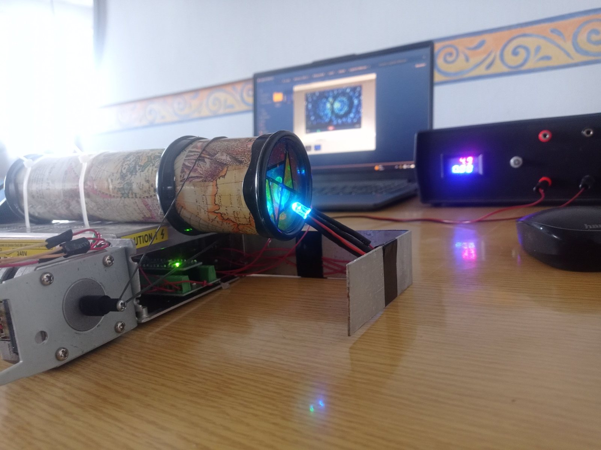
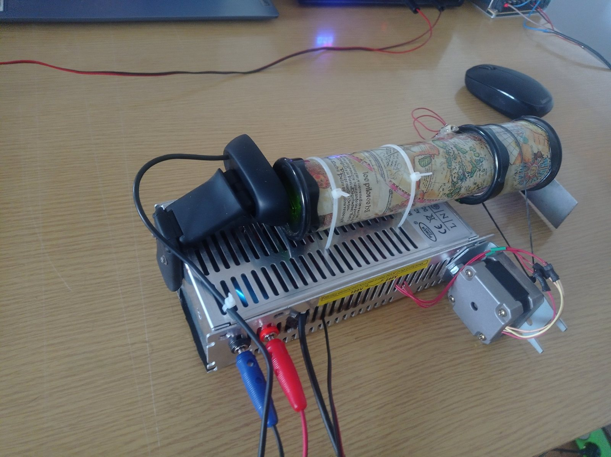
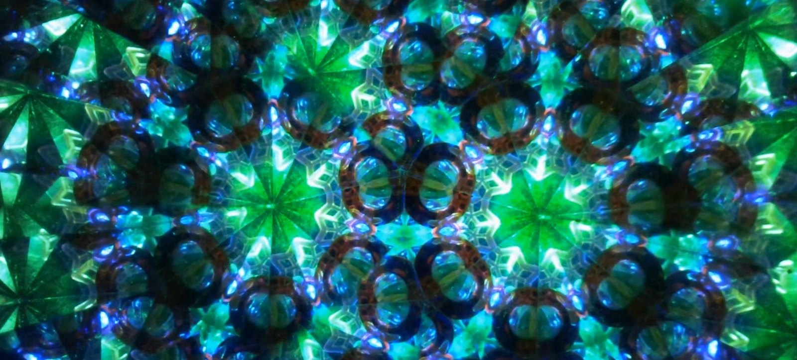

Kameraállókép a működő rendszerről — rózsaszín-lila-kék állapot. A kép a fizikai kaleidoszkóp optikai képe, nem utólag generált grafika.
A projekt
A KaleidoCam egy léptetőmotorral forgatott, programozható RGB-fényforrással
megvilágított kaleidoszkóp, amelynek optikai képét webkamera rögzíti. Ismételhető a vezérlés:
a forgás és a megvilágítás előre megírt koreográfia szerint fut. A kép viszont nem:
az objektumkamra tartalma minden indulásnál máshogy áll be, a hajtás pedig rugalmas és visszacsatolás
nélküli, így ugyanaz a jelenet minden lefutásban más mintázatot ad.
A rendszer három szakterület metszéspontjában áll: optika (tükörcső, szórt
megvilágítás, az objektumkamra tartalma), beágyazott vezérlés (lépésjel-generálás,
PWM-es színkeverés, időzítés) és mechanika (rugalmas szíjhajtás, és az ebből
következő késés). A megvalósítás kísérleti prototípus — a hangsúly azon van, hogy minden
látott mintázat valódi, mérhető fizikai állapotból származik.
Hardver
Mikrovezérlő
Arduino Nano
ATmega328P, 16 MHz
Motor
Léptetőmotor
bontott nyomtatóból, A4988-ról hajtva; a kaleidoszkóptest forgatása
Meghajtó
A4988 StepStick
STEP/DIR vezérlés; az EN bemenet nincs bekötve, a meghajtó folyamatosan engedélyezett
Világítás
RGB LED, közös anód
három PWM-csatorna, egyenként szabályozott fényerővel
Kamera
Logitech C270
HD webkamera a nézőke előtt
Tápellátás
külön motor- és 5 V-os ág
közös földeléssel, hogy a STEP/DIR jelszintek értelmezhetők maradjanak
Mechanika
rugalmas szíjhajtás
forgó kaleidoszkóptest, kötetlen áttétellel
Lépésfrekvencia
~167 lépés/s
3000 µs magas + 3000 µs alacsony STEP-szint
Funkció
Arduino Nano
Megjegyzés
A4988 STEP
D3
lépésimpulzus
A4988 DIR
D4
forgásirány
RGB piros
D9
PWM
RGB zöld
D10
PWM
RGB kék
D11
PWM
⟳
A szíjhajtás ára: a rugalmas hajtás miatt a kaleidoszkóp mozgása a motor
indulásához képest körülbelül 6 másodperces késéssel jelenik meg. Ez nem
szoftveres késleltetés, hanem a mechanika rugalmassága. A koreográfia ehhez igazodik:
hosszabb forgási szakaszok, ritkább irányváltás — különben a fényváltás és a mozgás
szétcsúszna a kameraképen.
Vezérlés és koreográfia
Az Arduino programja két dolgot hangol össze: a léptetőmotor forgását (STEP/DIR jelekkel)
és az RGB LED három csatornájának PWM-szintjét. A jelenetek előre programozottak,
nincs hang- vagy képvezérlés. A jelenlegi műsor — „A kristályok tánca” —
körülbelül 4 perc 48 másodperc, és automatikusan ismétlődik.
01Nyitány — fokozatosan erősödő fény.
02Első felvonás — folyamatos forgás és színátmenetek.
03Vörös felvonás — tiszta, pulzáló piros megvilágítás.
04Drámai szünet — a motor megáll, a fény elhalkul.
A teljes elrendezés · kaleidoszkóptest a tápegység házára fektetve, külön tápellátás a motornak és a vezérlésnek, közös földeléssel · a laptopon a kamerakép rögzítés közben

A megvilágított objektumkamra · a közös anódos RGB LED közvetlenül a kaleidoszkóp végébe világít; a szórt, színes fény adja a mintázat alapját

Hajtás és képalkotás felülnézetből · a webkamera a nézőke előtt, jobbra a léptetőmotor, a testet rugalmas szíj forgatja
Optikai eredmények

Zöld-türkiz-kék állapot · kristályszerű, határozott élű geometriai struktúrák — ugyanaz az optika, más megvilágítással és más forgási fázisban
◎
Mindkét mintázat kamerakép. Ugyanannak a fizikai optikai rendszernek két
különböző állapota: a megvilágítás színe és a forgási fázis változott, nem a kép.
Utólagos képfeldolgozás, szűrő vagy generált grafika nincs benne — a szimmetriát a
tükörcső geometriája hozza létre.
Hol tart most
Működik
Arduino-alapú léptetőmotor-vezérlés A4988-cal
RGB LED PWM-es színkeverése
Automatikus, ismétlődő fény- és mozgáskoreográfia
Rugalmas szíjas mechanikai hajtás
Kamerás megfigyelés és videórögzítés
Fejlesztési irányok
A szíjhajtás merevebbé tétele, a 6 s-os késés csökkentése
Rendezett, burkolt elektronika
A megvilágítás és a kameraparaméterek optimalizálása
Új fény- és mozgásprogramok, zenével összehangolva
Érdekes képkockák automatikus kiválasztása
Kompaktabb, kiállítható változat
Tapasztalat
A projekt tanulsága elsősorban mechanikai: egy rugalmas hajtás nem egyszerűen pontatlan,
hanem késleltet — és a késés a vezérlőprogramot is átírja. A koreográfiát nem a
motor mozgásához, hanem a kameraképen megjelenő mozgáshoz kellett igazítani, különben a fény- és
mozgásváltások szétcsúsztak volna.
Elektronikai oldalon a két tápág közös földelése a kritikus pont: a motorág és a vezérlés
külön táplálása csak közös referenciával működik, enélkül a STEP/DIR jelszintek értelmezhetetlenné
válnak a meghajtó számára. Az A4988 EN bemenete bekötetlen, így a meghajtó folyamatosan
engedélyezett — ez egyszerűsíti a programot, de a motor álló helyzetben is fogyaszt és melegszik.
Egy későbbi változatban ez kézenfekvő javítási pont.